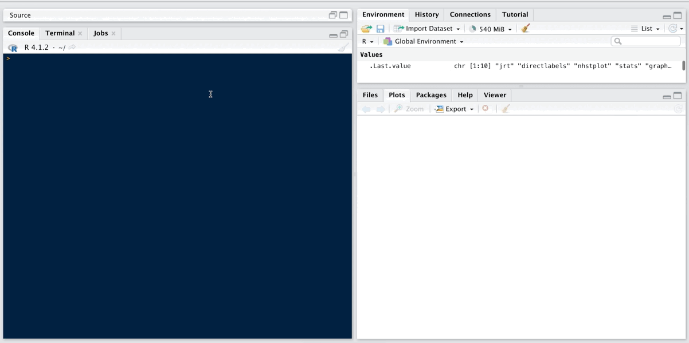

jrt – Item Response Theory Modeling and Scoring for Judgment Data
By Nils Myszkowski in Psychometrics Creativity Rater-mediated assessment

What it’s about
The goal of jrt is to provide tools to use Item-Response Theory (IRT) models on judgment data, especially in the context of the Consensual Assessment Technique, as presented in Myszkowski (2021).
- Myszkowski, N. (2021). Development of the R library “jrt”: Automated item response theory procedures for judgment data and their application with the consensual assessment technique. Psychology of Aesthetics, Creativity, and the Arts, 15(3), 426-438. http://dx.doi.org/10.1037/aca0000287
Vignette
The vignette can be found at https://cran.r-project.org/web/packages/jrt/vignettes/my-vignette.html
Installation
You can install the released version of jrt from CRAN with:
install.packages("jrt")
Example use
- Load the library
library(jrt)
## Loading required package: directlabels
- Load example dataset
data <- jrt::ratings
- To automatically select models
fit <- jrt(data)
- To select models a priori
fit <- jrt(data, irt.model = "PCM")
- To plot all category curves
jcc.plot(fit)

- To plot one judge’s category curves
jcc.plot(fit, judge = 1)

- Graphical options
jcc.plot(fit,
judge = 1,
overlay.reliability = T,
greyscale = T,
theme = "classic",
font.family = "serif")

- To plot total information
info.plot(fit)

- To plot judge information
info.plot(fit, judge = 1)

- Other options for information plots
info.plot(fit, type = "Reliability",
y.line = .70,
y.limits = c(0,1),
theta.span = 4,
theme = "classic")

- Posted on:
- January 1, 2022
- Length:
- 1 minute read, 193 words
- Categories:
- Psychometrics Creativity Rater-mediated assessment
- See Also: